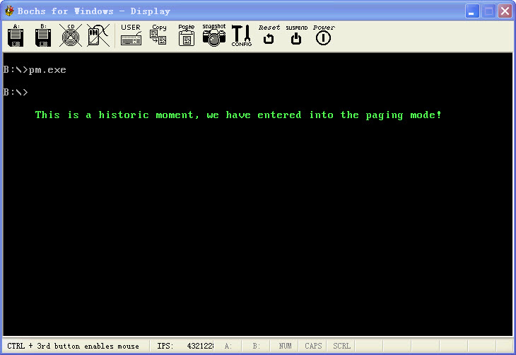

保护模式11:初探分页机制
文章目录
在没有学保护模式之前, 我一直觉得两个应用程序的虚拟地址都是一样的感觉非常神奇, 那时候一直认为系统有什么比较暴力的东西在里面,等过了一阵看了保护模式方面的书籍, 感觉就没有那么神奇了, 但是有过了一段时间发现. 分页机制理解起来是比较简单的, 但是想写一个程序能够顺利的将物理地址随便往线性地址上面映射还是有些难度的, 我感觉主要是这个东西比较抽象, 有点转不过来, 不过等多写了几个转换程序试验试验发现就能够比较形象的理解了!
如果用过调试器, 调试程序的时候不管开几个调试器, 打开同一个程序, 都是同一个地址, 执行起来却不会有问题, 觉得不可思议,就是循着这个好奇心走了这么远. 发现也不是很难搞定嘛…
在保护模式下(开启分段) 控制寄存器CR0的31位PG位, 控制着是否分页. 如果PG=1那么分页机制生效, 将通过分段机制转换出来的线性地址在通过分页机制转换成物理地址, 我觉得, 这个比分段要简单些, 主要是没有那么多权限什么的!
首先分页机制把线性地址空间和物理地址空间分别划分为大小相同的块, 这样的块称为页, 线性地址空间的任何一页, 可以映射到物理地址的任何一页, 采用分页机制的页大小是固定的, 都是4K, 那么页边界也就必须是4K,这个很好理解, 首尾相连嘛, 一个4K挨着一个4K, 那么4G内存需要1M个页表来存放, 计算方法是这样的
(1024*1024*4K)-1 = 4G
当然现在页还有4M的,这个这里就不说了, 由于页的大小固定是4K字节, 且页的边界是4K的倍数, 所以线性地址转换位物理地址的过程中低12位是不需要转换的, 直接使用就可以, 转换的只有高20位, 由此可以看出所谓分页就是处理线性地址中的页, 对应哪个物理地址中的页, 页对页的转换.. 页就是高20位之间的转换..
上面所了存放4G的页之间的转换需要1M个分页, 那么也就是说需要4M内存来存放页-页之间的转换表, 记得刚开始出386是85年, 那时候估计普通用户的电脑内存都是非常小的, 如果搞个分页就去了4M内存,那这电脑就根本没法做事了,于是Intel用两层页表来存放, 这样第一层就只需要4K(1024*4)内存, 第二层并不是都映射, 在任务访问内存异常时, 由操作系统重新调度页面, 这样就灵活多了. 第一层叫做页目录, 总共1024个. 可以看出来, 在正常的情况下页表项之间的间隔应该是4M内存,1024个就是4G内存了, 当然只是正常情况了.. 可以随便搞的.第二层就是页表了, 也是1024个, 4M/1024, 那么可以看出来一个间隔就是4K了, 当然只是常理上说了, 实际是随便映射..
那么现在我们总结下, 前面提到了页目录和页表, 那么他们在哪里呢? 页目录就是有CR3的高20位给出的, 只要保证是4K对齐的, 随便设置CR3都是没有问题的, 那么现在找到了页目录, 页目录中的高20位又给出了页表的位置, 当然也必须是4K对齐, 在把页表的高20位倒腾出来, 放在线性地址的高20位,这就是所谓的物理地址了. 当然和段描述符一样, 页目录描述符, 页表描述符都是有格式的, 这个可以看前面我贴的那个图片, 查阅下!
还有需要说明点的是,这个线性地址-物理地址转换的表, 会放在CPU的高速缓存中, 所以修改了页表以后记得刷新下, 这个和GDT, LDT中的描述符是一个款式, 当然如果页表或者页目录中的P存在位=0, 那么就无所谓了, 因为CPU不会存放P=0的页到高速缓存中.
前面说了, 并不一定所有的页表都在内存中的, 但是页目录是必须有的, 这样就可以节约很多的内存了, 当然还带来一个好处, 就是现在操作系统的分页文件, 可以把硬盘当做内存来调度. 页表中有一位P位, 如果P位为0, 当访问这个页面的时候, 会产生页故障, CR2中存放的就是故障地址, 那么操作系统就可以在页故障的中断处理中, 从容的处理这些事情了..比如从磁盘中读取这个页进来..
页还有权限检测的, 在OD里面看到一页一页内存的属性各不相同, 原来是这样搞的, 我们在页表的属性中, 可以设置每一个页表的属性都不一样, 除了过分段这一关还要过分页这一关, CPU的保护机制可见一斑.. 页的话, 没有环这个概念, 只有系统页, 用户页之分. 特权级0,1,2都是系统级. 3是用户级.页表中的位1是读写属性位R/W, 如果页表的属性R/W=1那么表示可以读写/执行, 若R/W=0, 只能对这个页进行读取和执行, 但是不能够写入..当然这个只是限制3环程序的, 对系统级程序, 形同虚设. 页表中的属性位位2是U/S, 表示这个页是系统页还是用户页. 如果是系统页(U/S=0), 那么只能够被系统级访问, 如果是用户页(U/S=1), 那么谁都可以访问.. 可以看出来0,1,2环的程序就是NB.. 随便搞!
在线性地址转物理地址的过程中, 如果页目录或者页表的P=0,或者违反了页表的保护规则而进行访问. 那么产生(0EH)号异常. 在故障处理程序中压入了产生异常的CS:EIP, 故障排除以后可以接着再执行一遍产生异常的指令, 如果是P=0的错误, 那么显然就可以正常的跑下去了, 而访问内存的任务肯定不了解这个的.当然, 前面说了, 如果产生页故障以后, 处理器把产生页故障的线性地址装入CR2.. 当然为了区分不同的页故障. 还需要一个错误码.. 位2(U)表示产生异常是由哪个特权级产生的, U=1表示是3环的程序产生的, U=0表示是0,1,2环产生的. Bit1(W)是访问类型, 如果W=0, 表示读/执行,W=1表示写. Bit0(P)是异常类型,P=0表示页不存在故障, P=1表示是保护类型故障. 这里就可以从容处理了. 如果是P=0, 那么调入页. 然后返回. 如果是其他错误, 一般就结束任务什么的!
这篇说的有些啰嗦, 感觉. 当然还是和以前一样. 说说下面这个代码的逻辑, 其实很简单. 首先在实模式下初始化了保护模式下需要初始化的东西, 然后进入保护模式的16位段, 然后在这个16位段直接跳到32位段中, 还是32位段写着舒服..
在32位段中. InitPage这号函数里面, 我们首先初始化了页表(200000h)和页目录(201000h). 基本上一眼就可以看出来,所有的线性地址对应物理地址..这当然是不行的, 所以我们将0地址处的内存页地址对应到b8000h的视频写入页中. 暴力.现在对着0地址写就是对着b8000h写一样了..呵呵!!有图有真相!
http://www.joenchen.com/JoenTools/page.rar

;============================================================================ ;演示保护模式下分页机制, 所有的线性地址对应物理地址 ;编译选项请参见 makefile TAB = 8 ;============================================================================ .686p Include pm.inc option casemap:none Stack_Len equ 1024 ;堆栈大小 PageDirBase equ 200000h ; 页目录开始地址: 2M PageTblBase equ 201000h ; 页表开始地址: 2M+4K ;============================================================================
GdtSeg Segment use16 ;全局描述符表 ; ;段基址 ;段界限 ;属性 Dummy: Descriptor 0, 0, 0 ;空的描述符 Normal: Descriptor 0, 0ffffh, DA_DRW ;规范段描述符 g_DataDesc: Descriptor 0, 0fffffh, DA_DRW or DA_LIMIT_4K ;全局4G数据段 g_CodeTempDesc: Descriptor 0, 0ffffh, DA_C ;非一致代码段16位 g_CodePageDesc: Descriptor 0, CodePageSegLen-1, DA_C or DA_32 ;代码段, 进行分页工作 g_PageDirDesc: Descriptor PageDirBase, 4096-1, DA_DRW ;页目录段 g_PageTblDesc: Descriptor PageTblBase, 1024-1, DA_DRW or DA_LIMIT_4K ;页表 GDTLen equ $ - GdtSeg ;GDT长度 ;—————————————————————————- GDT_Ptr word GDTLen-1 ;VGDT dword 0 _RegSp word ? ;用于保存SS:SP _RegSs word ? SzString byte “This is a historic moment, we have entered into the paging mode!”, 0 ;—————————————————————————- NormalSelector equ Normal - GdtSeg ;规范段选择子 g_DataSelector equ g_DataDesc - GdtSeg or SA_RPL3 ;全局数据段 g_CodeTempSelector equ g_CodeTempDesc - GdtSeg ;临时代码段选择子 g_PageDirSelector equ g_PageDirDesc - GdtSeg ;页目录表选择子 g_PageTblSelector equ g_PageTblDesc - GdtSeg ;页表选择子 g_CodePageSelector equ g_CodePageDesc - GdtSeg ;分页代码段选择子 GdtSeg Ends ;============================================================================ ;执行分段工作 ;============================================================================ CodePageSeg Segment use32 ;—————————————————————————- ;显示一个字符串 ShowString Proc uses esi edi _lpStr:dword, _dwCoord:dword, _dwStringLen:dword
mov esi, \_lpStr
mov edi, \_dwCoord
cld
mov ecx, \_dwStringLen
@@: lodsb mov ah, 0ah stosw loop @b ret ShowString Endp _InitPage equ $ - CodePageSeg ;进行分页 InitPage Proc
;—————————————————————————- ;为了简单, 所有的线性地址对应物理地址, 这里初始化页目录, ;页目录之间的跨度是4M. 3FC000000 mov ax, g_PageDirSelector ;页目录 mov es, ax cld mov ecx, 1024 ;共 1K 个表项 xor edi, edi xor eax, eax ;属性:可读可写的用户页目录 mov eax, PageTblBase or PG_P or PG_USU or PG_RWW @@: stosd add eax, 4096 ; 为了简化, 所有页表在内存中是连续的. loop @b ;—————————————————————————- ;初始化页表(1K个, 4M内存空间), 页表之间的跨度是4096个字节, 也就是1000h ;因为线性地址的低12位的索引的最大限度就是4096, 所以跨度是这样的. mov ax, g_PageTblSelector ;页表 mov es, ax mov ecx, 1024 * 1024 ;1M个页表 xor edi, edi xor eax, eax mov eax, PG_P or PG_USU or PG_RWW
@@: stosd add eax, 4096 loop @b
;—————————————————————————- ;将b8000h映射到线性地址000000h上面, 一般修改映射都是修改页表 mov ax, g_DataDesc mov ds, ax mov esi, PageTblBase
mov ecx, 0b8000h
or ecx, PG\_P or PG\_USU or PG\_RWW ;属性:可读可写的用户页表
mov dword ptr ds:\[esi\], ecx
;—————————————————————————- mov eax, PageDirBase ;装载页目录基址 mov cr3, eax
mov eax, cr0
or eax, 80000000h ;开启分页
mov cr0, eax
jmp @f
@@: ;—————————————————————————- push ds pop es mov esi, GdtSeg shl esi, 4 lea ecx, SzString add esi, ecx ;要显示的字符串 mov edi, 5 * 160 + 5 * 2 ;5行5列
Invoke ShowString, esi, edi, sizeof SzString
;返回实模式
Jmp32 g\_CodeTempSelector, \_GoToProtect
InitPage Endp CodePageSegLen equ $ - CodePageSeg ;长度 CodePageSeg Ends ;============================================================================ ;16位段, 由实模式跳入 ;============================================================================ g_Code16Seg Segment use16 _GoToProtect Proc ;返回实模式 mov ax, NormalSelector mov fs, ax ;规范选择子 mov es, ax mov ds, ax mov ss, ax
mov eax, cr0 ;关PE位, 进入实模式
and al, 0feh
and eax, 7fffffffh ;关分页, 进入实模式
mov cr0, eax
;刷新段选择子缓冲区, 退回实模式
Jmp16 <seg StartCodeSeg >, < offset \_RealProtect >
_GoToProtect Endp ;—————————————————————————- _ProtectEntry Proc ;实模式跳入入口 ;16位-32位执行分页 Jmp16 g_CodePageSelector,_InitPage ;—————————————————————————- _ProtectEntry Endp g_Code16Seg Ends ;============================================================================ ;起始代码段初始化保护模式的各个结构, 然后跳入保护模式 ;============================================================================ StartCodeSeg Segment use16 _InitGdt Proc uses es ;初始化全局描述符表
xor eax, eax
mov ax, GdtSeg
mov es, ax ;es-->全局描述符表
;—————————————————————————- shl eax, 4 mov dword ptr es:[GDT_Ptr+2], eax ;初始化VGDT描述符 ;—————————————————————————- xor eax, eax mov ax, g_Code16Seg ;初始化十六位的代码段 shl eax, 4 mov word ptr es:[g_CodeTempDesc+2], ax ;段基址低位 shr eax, 16 mov byte ptr es:[g_CodeTempDesc+4], al ;段基址高地址低位 mov byte ptr es:[g_CodeTempDesc+7], ah ;段基址高地址高位 ;—————————————————————————- xor eax, eax mov ax, CodePageSeg ;初始化分页代码段 shl eax, 4 mov word ptr es:[g_CodePageDesc+2], ax ;段基址低位 shr eax, 16 mov byte ptr es:[g_CodePageDesc+4], al ;段基址高地址低位 mov byte ptr es:[g_CodePageDesc+7], ah ;段基址高地址高位
;—————————————————————————- lgdt fword ptr es:[GDT_Ptr] ;装载GDT ;—————————————————————————- ret _InitGdt Endp ;—————————————————————————- Jmain Proc
call \_InitGdt ;初始化GDT全局描述符
;—————————————————————————- mov ax, GdtSeg mov ds, ax
mov ds:\[\_RegSs\], ss
mov ds:\[\_RegSp\], sp ;保存SS:SP
cli
\_EnableA20 ;关中断开A20地址线
mov eax, cr0
or eax, 1
mov cr0, eax ;开启分段, 进入保护模式
;—————————————————————————- Jmp16 g_CodeTempSelector, <offset _ProtectEntry>;跳入保护模式
Jmain Endp ;—————————————————————————- _RealProtect Proc ;返回保护模式
mov ax, GdtSeg
mov ds, ax
lss sp, dword ptr ds:\[\_RegSp\] ;恢复SS:SP
\_DisableA20 ;关A20地址线, 开中断
sti
mov ax, 4c00h
int 21h
_RealProtect Endp StartCodeSeg Ends
End Jmain
文章作者 忆杰
上次更新 2011-09-29